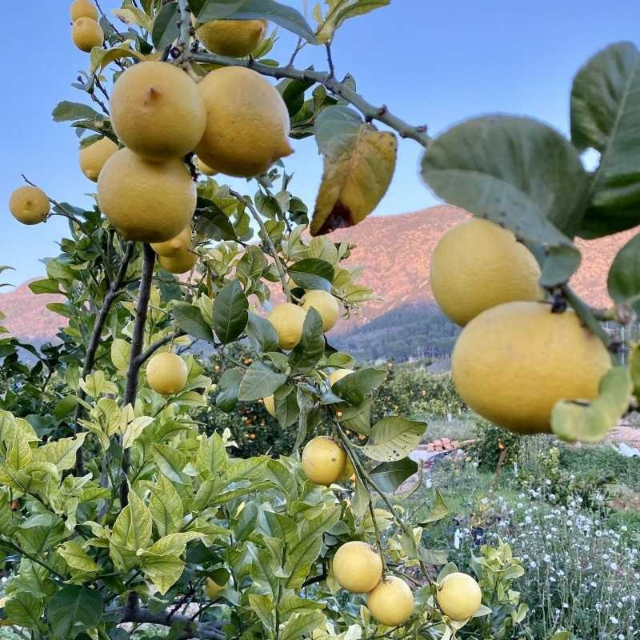

Lots of Lemon began with a simple idea: lemons are one of nature's best cleaners, and most cleaning products barely use any.
We'd always known lemons had real cleansing power — that sharp, bright cut-through-anything quality that's been part of home cleaning for generations. But it wasn't until a trip to Valencia that the idea became a mission.
Valencia is lemon country — groves stretching out in every direction, the air genuinely different because of them. Standing in those groves, surrounded by that smell, was the moment it clicked: this is what a clean home should actually smell like. Not a chemical approximation of lemon. The real thing.

We came home and started Lots of Lemon with one vow: bring the real cleaning power of cold-pressed lemon oil into people's homes — not a synthetic fragrance standing in for it, but the actual d-limonene that makes lemons work as a degreaser and cleaner in the first place.
That's still the whole idea behind every bottle we make: help your family clean better, using the power of something that grows on a tree in Valencia.
These days, our lemons are sourced from groves in Florida, and every bottle is 100% made in Georgia, USA — cold-pressed, blended, and bottled right here at home.
Our lemon oil is cold-pressed from real citrus peel, keeping the d-limonene intact — the natural solvent that actually cuts grease. Most "lemon-scented" cleaners use a fragrance note instead of the real thing.
We built these formulas to work hard on grime while still being something you're comfortable using around your kids and pets.
We're not a private-equity roll-up. We're a small, independent company that cares about what's actually in the bottle.
See the full lineup and find the right product for your home.
Shop the Lineup